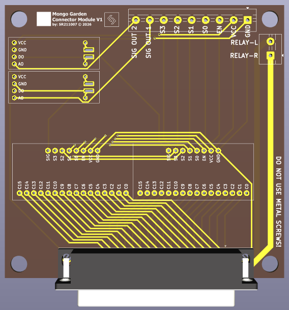
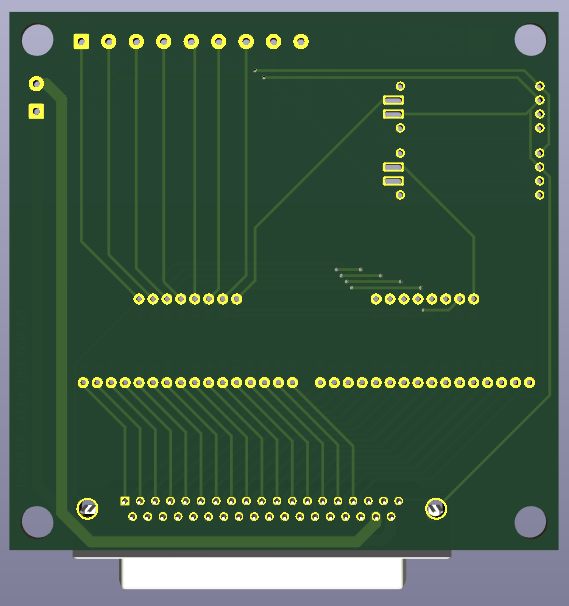

MONGO GARDEN es una estación de monitoreo ambiental embebida en hardware propio. Mide hasta 30 canales de sensores, registra en SD, expone datos vía WiFi y WebSocket, y corre sobre un PCB diseñado desde cero.
Arquitectura del sistema
El sistema combina sensado analógico multiplexado, almacenamiento local en SD, comunicación WiFi con servidor HTTP y WebSocket, y un reloj de tiempo real para timestamping preciso.
Arduino MKR1000 con chip ATSAMW25. Combina ARM Cortex-M0+ con módulo WiFi integrado WINC1500. Operado bajo el framework PlatformIO.
CD74HC4067 controlado con 4 pines digitales. Permite leer sensores de humedad de suelo agrupados en dos líneas analógicas con muy pocos recursos del microcontrolador.
Soporta modo cliente WiFi con WebSocket y también un Access Point propio con servidor HTTP. Eso le da operación local y remota según el escenario.
Los datos se guardan en data.txt para conservar lecturas locales incluso cuando no hay red disponible.
El DS1302 aporta fecha y hora a cada registro. También existe un modo demo que sincroniza el reloj con la hora de compilación del firmware.
La placa integra conectores para sensores, relés de control y el resto de periféricos del sistema en un diseño hecho específicamente para este módulo.
Sensores integrados
// Inicialización de sensores dhtexterno.begin(); dhtinterno.begin(); Rtcmod.Begin(); bmp.begin(); tsl.begin(); // Clasificación de luz if (event.light < 100) → NOCHE / Amanecer else if (event.light < 10000) → NUBLADO else if (event.light < 50000) → SOL DIRECTO
PCB del proyecto
Esta página ya muestra las dos imágenes reales de la PCB. La idea acá es enseñar la placa tal como está y dejar el foco en el hardware que sí puedes presentar ahora mismo.


Interfaz de comandos
El sistema acepta comandos tanto por puerto Serial como por WebSocket. La misma interfaz funciona en modo local y en modo remoto.
| Comando | Función | Descripción | Estado |
|---|---|---|---|
| 1 | leersensores() | Lee los canales del multiplexor con delay configurable | Activo |
| 2 | obtenerhora() | Captura timestamp del DS1302 | Activo |
| 3 | imprimirhora() | Envía la última hora obtenida al Serial o WebSocket | Activo |
| 5 / 6 | humedaddht11() | Temperatura y humedad del DHT11 interno o externo | Activo |
| 9 | escribirDatos() | Guarda los valores actuales en data.txt con timestamp | Activo |
| 10 | barometro() | Temperatura, presión y altitud estimada | Activo |
| 11 | TSL2561() | Lectura de lux, clasificación de luz e índice UV aproximado | Activo |
| AP | startWebServerAP() | Crea un Access Point propio con servidor HTTP | Activo |
| WifiLab | WifiLab() | Conecta a red WiFi e inicia WebSocket | Activo |
| 8 | pingToHost() | Verifica conectividad de red con ping | Activo |
Estado del proyecto
Esta presentación se centra solo en la PCB y el firmware que ya están listos para mostrarse. La presentación se centra en la PCB y el firmware que representan la versión actual del proyecto. También se dejó por fuera la sección de asignación de pines porque aquí no aporta valor visual ni técnico al enfoque de la página.